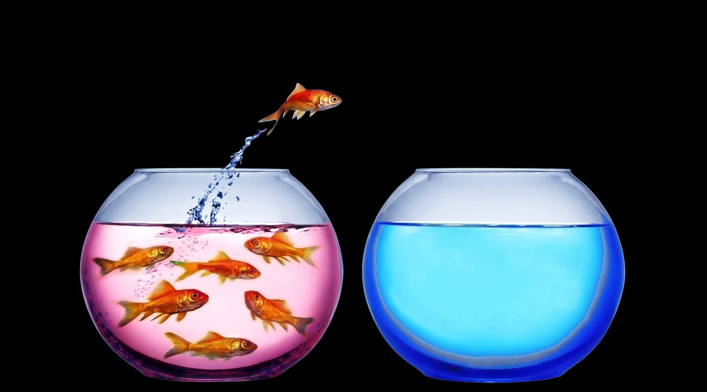

La mayoría de negocios prospecta con una lista larga y un mensaje genérico. Esta es la fórmula que usamos en Gessler Studio para hacerlo al revés: el océano azul elige dónde competir y la microsegmentación con IA encuentra a quién hablarle. Con el paso a paso y un caso real.

La mayoría de negocios pequeños prospectan igual: una lista larga, un mensaje genérico ("hacemos webs, branding y redes, ¿te interesa?") y la esperanza de que alguno responda. El problema no es la cantidad de mensajes. Es que el mensaje no le habla a nadie en particular y la oferta se parece a la de todos los demás.
La fórmula que proponemos se entiende con dos preguntas:
| Pregunta | Técnica | Qué resuelve |
|---|---|---|
| ¿Dónde? | Océano azul | Crea un espacio de mercado donde tu oferta se vea diferente y no se compare solo por precio. |
| ¿A quién? | Microsegmentación con IA | Encuentra al prospecto exacto por señales reales, no solo por categoría. |
La lógica: primero eliges el terreno. Luego encuentras a quién hablarle dentro de él.
La estrategia del océano azul viene del libro Blue Ocean Strategy de W. Chan Kim y Renée Mauborgne. Su idea central cambia la pregunta: en vez de "¿cómo le gano a la competencia aquí?", preguntas "¿puedo crear otro espacio donde la comparación directa deje de importar?".
"Diferénciate" es un consejo fácil de dar y difícil de aplicar. Kim y Mauborgne lo aterrizan con la matriz ERRC (el marco de las cuatro acciones), que obliga a tomar decisiones en cuatro frentes:
| Acción | La pregunta |
|---|---|
| Eliminar | ¿Qué hacemos por costumbre que el cliente no necesita? |
| Reducir | ¿Qué podemos ofrecer con menos complejidad? |
| Elevar | ¿Qué valora el cliente y merece más inversión? |
| Crear | ¿Qué no ofrece casi nadie y cambia la propuesta? |
Hicimos el ejercicio con nuestro propio estudio. El objetivo: dejar de vender "una pieza de diseño" y empezar a vender un sistema comercial.
| Acción | Decisión de Gessler |
|---|---|
| Eliminar | Negociar el precio a la baja. Aceptar cualquier cliente sin filtro. |
| Reducir | Reuniones antes de cotizar. Prospectar seis categorías de negocio a la vez. |
| Elevar | Casos visibles con números. Respuesta en menos de una hora. |
| Crear | Prospección con microsegmentación e IA. Una mensualidad empaquetada que funciona como canal comercial. |
Esa mensualidad es la base de nuestros planes de diseño web por suscripción.
La segmentación tradicional agrupa por datos demográficos: "arquitectos en Bogotá". Ciudad, industria, tamaño. El resultado es un mensaje genérico para todos, decidido con supuestos, y un estudio premium recibe lo mismo que uno que no tiene presupuesto.
La microsegmentación busca otra cosa: una buena señal más una brecha clara. Por ejemplo, un estudio con contenido fuerte y actividad constante en redes, pero con un problema visible en su presencia digital.
| Segmentación tradicional | Microsegmentación con IA | |
|---|---|---|
| Criterio | Ciudad + industria + tamaño | Contenido fuerte + actividad + problema visible |
| Mensaje | Uno genérico para todos | Uno distinto por grupo |
| Cómo se decide | Con supuestos | Con señales reales |
| Escala | Manual, pocos perfiles | La IA ayuda a clasificar cientos de perfiles |
Regla de oro: el mensaje cambia porque la señal cambió.
Compara estos dos mensajes para el mismo prospecto:
Mensaje genérico: "Hola, somos un estudio de diseño. Hacemos webs, branding y redes. ¿Te interesa una propuesta?"
Habla de ti y no explica por qué le escribes.
Mensaje según la señal: "Vi que sus proyectos logran buen alcance orgánico, pero su web no está disponible. Preparé una demo rápida para mostrarle una alternativa."
Conecta lo que viste con una solución concreta.
Especializarse y personalizar no es una intuición nuestra. Estos son hallazgos reportados por las fuentes:
Son resultados de las fuentes citadas, no una garantía para cualquier negocio. Lo que sí muestran es la dirección: hablarle a menos gente, pero mejor.
En septiembre de 2026 aplicamos el proceso completo para prospectar estudios de arquitectura:
Resultado: una reunión con el estudio, buena recepción de la propuesta y la posibilidad de que nos recomienden a otros estudios. La señal abrió la conversación; la demo hizo el resto.
Nota: el estudio mencionado no es cliente de Gessler Studio. Lo usamos como caso de estudio, dentro de un trabajo académico sobre estrategia comercial, para mostrar cómo funciona el proceso de prospección. Omitimos su nombre por respeto a su privacidad; los datos de alcance que citamos son públicos y los tomamos de sus redes sociales.
| Océano azul | + | Microsegmentación | = | Resultado |
|---|---|---|---|---|
| El dónde: define el espacio en el que eres distinto. | El a quién: encuentra la señal que dice "aquí sí". | Precisión en el terreno: menos volumen inútil, más relevancia por contacto. |
La métrica que importa no es cuántos mensajes enviaste, sino qué señal convierte mejor.
Es un enfoque propuesto por W. Chan Kim y Renée Mauborgne para dejar de competir en mercados saturados (océanos rojos) y crear un espacio propio con una propuesta diferente, de modo que la comparación directa con la competencia deje de ser relevante.
Es agrupar prospectos por señales reales de comportamiento o necesidad, como la calidad de su contenido, su actividad o un problema visible, en lugar de solo por ciudad, industria o tamaño. La IA ayuda a revisar y clasificar cientos de perfiles para que cada grupo reciba un mensaje distinto.
Es el marco de las cuatro acciones de la estrategia del océano azul: eliminar, reducir, elevar y crear. Sirve para convertir la idea de "diferenciarse" en decisiones concretas sobre qué dejar de hacer y qué empezar a ofrecer.
Sí. No necesitas un equipo de datos: basta con definir un nicho, elegir tres señales, revisar entre 100 y 150 perfiles y escribir mensajes cortos según cada señal. La IA acelera la clasificación, pero el criterio lo pones tú.
En Gessler Studio te ayudamos a definir tu diferencial y a construir la web y el contenido que lo comunican. Cuéntanos qué haces.
Cuéntanos sobre tu proyecto